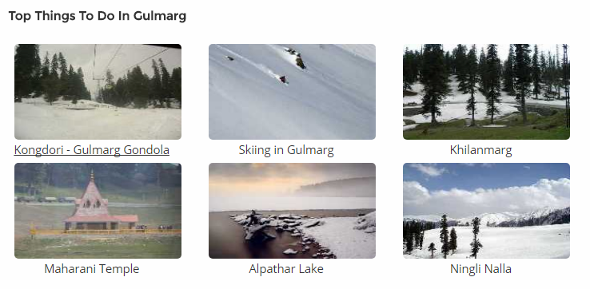

Situated at an altitude of 2730 m above sea level, Gulmarg is surrounded by snow covered mountains, lush green meadows, deep ravines, evergreen forested hills and valleys.
Known for its scenic beauty, Gulmarg has also been a popular destination for shooting of various Bollywood films. Among one of the top honeymoon locations, Gulmarg boasts of being a beautiful town without the crowd like Manali and Shimla. Gulmarg has also been developed as an adventure hub as Indian Institute of Skiing and Mountaineering is located here. A lot of courses on trekking, mountaineering, skiing, etc. are offered by IISM at great prices here. However, if you are planning to do a course, it is advisable to book your course well in advance. There are a lot of other private tour operators in Gulmarg as well which provide similar courses and facilities for skiing, snowboarding and trekking. The cable car here is also one of the prime attractions here and is the 2nd highest cable car in the world.
